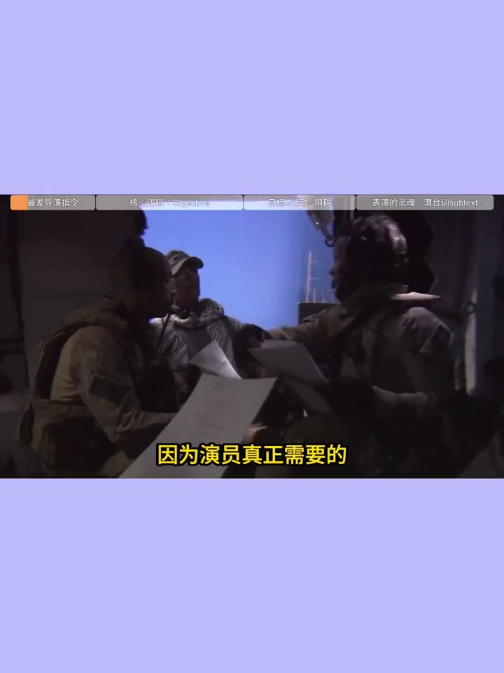
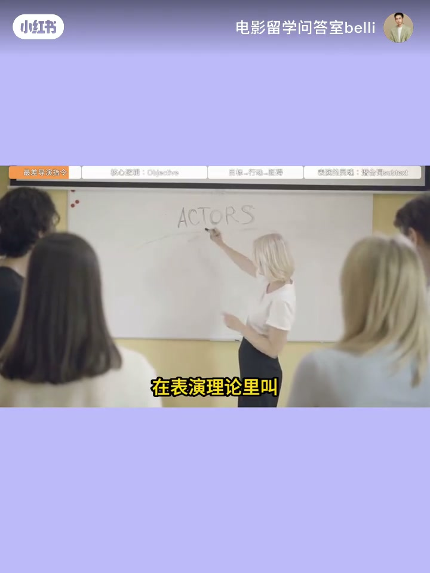
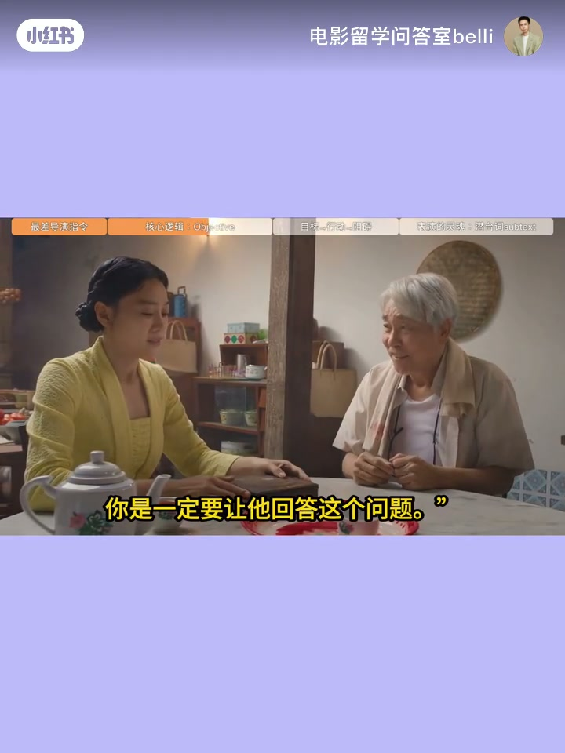
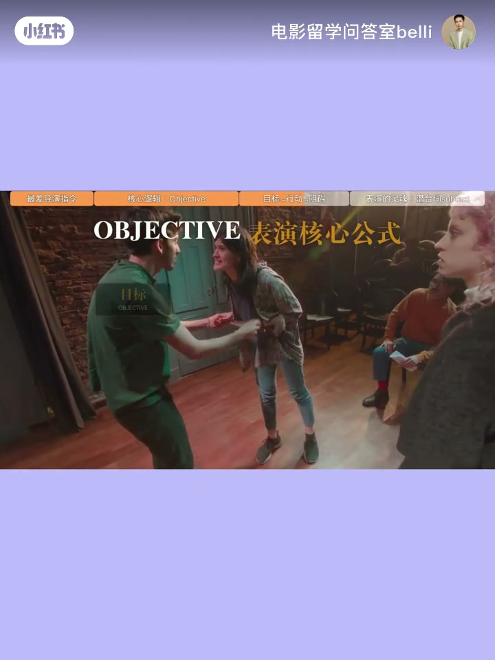
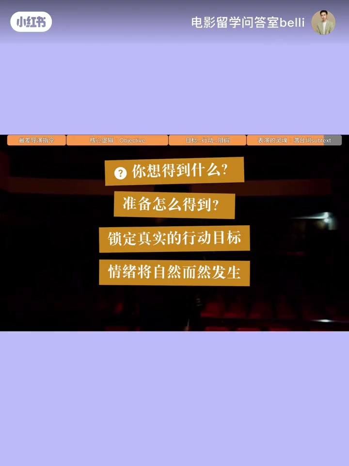

内容要点
黄金10集⑤：演员真正需要的是行动目标而非被要求的情绪。斯坦尼思路：objective / action / obstacle；嘴上说的和真正想要的不一致时出现 subtext。海外第一问：What do you want?
知识结构
「再伤心一点」最没用；要的是行动目标。
陪父吃饭表象 vs 追问为何离开；演悲伤 vs 逼问。
objective/action/obstacle；戏剧由此产生。
问候底下的真问题；情绪会自己发生。
好演员不是在演情绪，是在替人物完成一次真实行动。
00:00–00:24先问目标，不要先要情绪
「你再伤心一点」可能是指导演员时最没用的话。开演前不该先问「你现在什么情绪」，而该问「这场戏你到底想得到什么」——objective 人物目标。
「演员真正需要的往往不是情绪，而是一个行动目标。」


00:24–01:08案例：见病重的父亲
女人多年后回乡见病重父亲，表面陪吃饭，真正想知道当年为何离开。若指令是「演悲伤」，容易声音放低、眼神躲闪、挤泪；若指令是「今天不是来哭，一定要让他回答」，表演立刻不同——平静甚至压抑，但每句话逼近父亲，张力反而出来：在行动，不是在演悲伤。

01:08–01:40目标·行动·阻碍
斯坦尼斯拉夫斯基：人物不为展示情绪而行动，而是为某目标在情境中行动。一场戏可简化为 objective / action / obstacle——想得到什么、怎么得到、对方如何阻止，戏剧就产生了。

01:40–02:17潜台词与 What do you want
嘴上说的和真正想要的不一致时出现 subtext： 「你最近过得好吗」表面问候，底下可能是「你是不是已经不需要我了」。要演的是没说出口的那个。训练追问 What do you want? What are you doing to get it? 找到答案后，情绪不必演，它会自己发生。

完整转录（40段）
Whisper medium · 中文 · 已做术语校正，仍可能有识别误差。
你再伤心一点,可能是导演指导演员时最没用的一句话
因为演员真正需要的往往不是情绪,而是一个行动目标
一个演员真正开始表演之前,导演首先应该问的不是你现在是什么情绪
而是你在这场戏里到底想得到什么
这个词在表演理论里叫objective 人物目标
举一个更典型的电影场景
一个女人多年以后回到故乡去见已经病重的父亲
她表面上只是陪父亲吃一顿饭
但她真正想知道的是当年她为什么离开
如果导演告诉演员,这一场你要演的悲伤
演员很容易开始表现悲伤,声音放低,眼神躲闪,甚至流眼泪
但如果导演告诉她,你今天来不是为了哭
你是一定要让她回答这个问题,表演马上就不一样了
她可能会非常平静,甚至一直控制自己的情绪
但每一句话都在逼近父亲
这时候,真正的戏剧张力反而出来了
因为演员不再是在演悲伤,而是在行动
这也是斯坦尼斯拉夫斯基表演体系里非常重要的思路
人物不是为了展示情绪而行动
而是为了某个目标,在特定情境中采取行动
所以,一场表演可以简单理解成
objective,action,obstacle,目标行动,阻碍
人物想得到什么,她准备怎么得到,对方又怎样阻止她
戏剧就这样产生了
而当人物嘴上说的,和她真正想要的东西不一样时
又出现了另一个电影里非常重要的概念
subtext,潜台词
你最近过得好吗?表面是问候
但真正想问的可能是,你是不是已经不需要我了
演员真正要演的,往往不是前面那句话
而是后面那个没有说出口的东西
所以在海外电影表演训练里
老师经常追问的并不是你现在应该哭吗
而是what do you want?
what are you doing to get it?
你想得到什么?你准备怎么得到?
当演员真正找到这个答案
情绪反而不需要被演出来,它会自己发生
所以,好的演员不是在演情绪
他是在替人物完成一次真实的行动